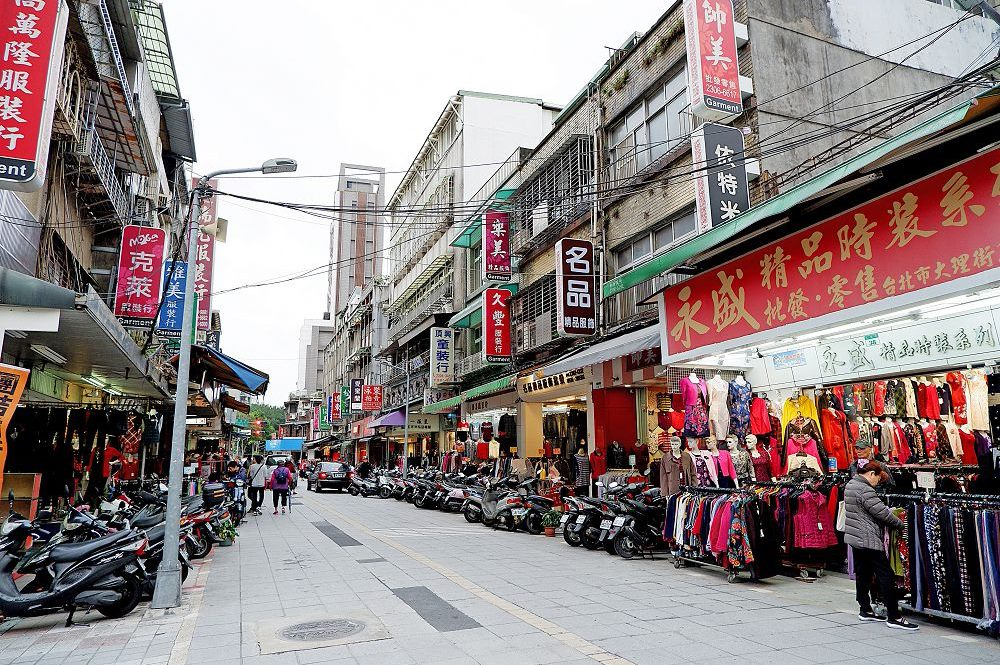

萬華區
艋舺商圈
早期因臨近萬華車站佔了交通地利之便，形成了台灣第一個成衣銷售批發市場， 發展至今約有半世紀的歷程，可說是台灣成衣業的發源地， 包括批發市場、製衣工廠皆聚集在萬華火車站、大理街一帶，全盛時期曾高達二千多家廠商。 本商圈亦為俗稱「親家母裝」或「媽媽裝」的熟齡女禮服勝地，晚禮服款式相當齊全， 這些商品在以少淑女裝為販售最大宗的艋舺服飾商圈中，別具特色。106年凱撒飯店進駐雙子星大樓， 結合周邊特色景點例如萬華林宅與西園29服飾創作基地，吸引國內外遊逛人潮前往。
坐落位置 : 約為桂林路、康定路、西園路一段及艋舺大道所圍範圍
鄰近捷運 : BL10 龍山寺站
商圈類型 : 餐飲小吃、服飾、青草店、佛具店

西門町商圈
西門町商圈為臺北市首座徒步商圈，商圈組織扮演在地經營最佳實踐者，名列為臺北市十大國際觀光客必遊景點。 西門町商圈堪稱為全臺新舊文化的引領者，舉凡電影產業、音樂產業、文創產業、創意市集、塗鴉文化、 刺青藝術、街頭藝人、動漫產業及明星潮流品牌等，成為國內外參訪團首選商圈。
坐落位置 : 約為東至中華路1段、西至康定路、南至成都路、北至漢口街2段間之區域
鄰近捷運 : BL11 / G12 西門站
商圈類型 : 以青少年服飾、異國服飾、美容美髮、餐飲小吃、視聽影音為主